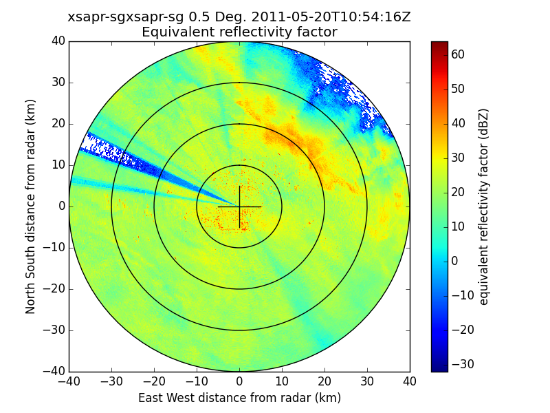

Create a PPI plot from a Sigmet file¶
An example which creates a PPI plot of a Sigmet file.
Python source code: plot_ppi_sigmet.py
print(__doc__)
# Author: Jonathan J. Helmus (jhelmus@anl.gov)
# License: BSD 3 clause
import matplotlib.pyplot as plt
import pyart
filename = 'XSW110520105408.RAW7HHF'
# create the plot using RadarDisplay (recommended method)
radar = pyart.io.read_rsl(filename)
display = pyart.graph.RadarDisplay(radar)
fig = plt.figure()
ax = fig.add_subplot(111)
display.plot('reflectivity', 0, vmin=-32, vmax=64.)
display.plot_range_rings([10, 20, 30, 40])
display.plot_cross_hair(5.)
plt.show()
Total running time of the example: 3.14 seconds